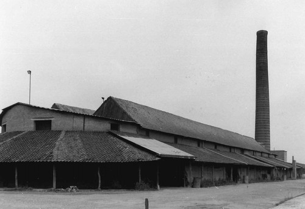
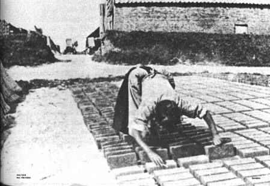
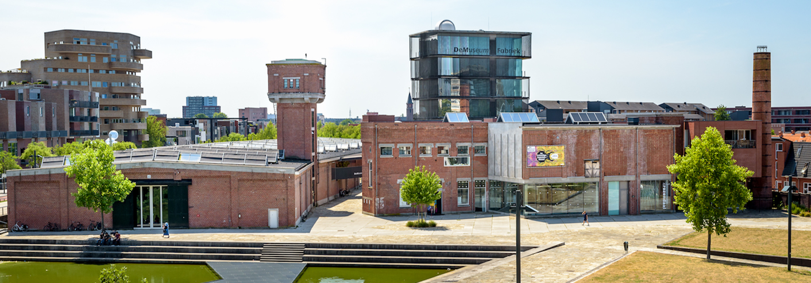

De Oude Tuinkabouterfabriek in Sint-Gillis-Waas
In het pittoreske dorpje Sint-Gillis-Waas, verscholen tussen de groene velden en oude bomen, staat de legendarische Oude Tuinkabouterfabriek. Deze historische fabriek speelde een cruciale rol in de productie van de iconische tuinkabouters die over de hele wereld te vinden zijn.
De Oorsprong van de Fabriek
De Tuinkabouterfabriek werd opgericht in het begin van de 20ste eeuw door de familie Maes. Wat begon als een klein ambachtelijke werkplaats groeide al snel uit tot een fabriek die kabouters produceerde voor tuinen en parken. De fabriek werd beroemd vanwege de vakmanschap en de charme van de handgemaakte kabouters die er werden geproduceerd.
Het Proces van Kabouterproductie
De productie van de kabouters was een langdurig proces. De klei werd met de hand gemodelleerd, waarna de kabouters in een oven werden gebakken. Daarna werden ze zorgvuldig beschilderd in de kenmerkende felrode kleuren en vrolijke gezichten. Elk kabouterbeeld werd voorzien van een uniek detail, waardoor geen twee kabouters exact hetzelfde waren.
Het Wereldwijde Succes
Door het enorme succes van de fabriek werden de tuinkabouters niet alleen in België verkocht, maar vonden ze hun weg naar tuinen over de hele wereld. De charmante kabouters werden al snel een symbool van gezelligheid, rust en verbondenheid met de natuur.
De Sluiting van de Fabriek
Na tientallen jaren van succesvolle productie werd de fabriek in de jaren '80 gesloten. De toenemende industrialisatie en de veranderende vraag naar massaproductie waren de belangrijkste redenen voor de sluiting. Toch leeft de geschiedenis van de fabriek voort in de talloze kabouters die over de hele wereld worden gekoesterd.
"Elke kabouter draagt een stukje geschiedenis met zich mee – een stukje van de magie die ooit hier begon." – Oud-eigenaar van de Tuinkabouterfabriek
De Erfgoed van de Fabriek
Vandaag de dag herbergt het voormalige fabrieksterrein een klein museum dat de geschiedenis van de fabriek en haar beroemde kabouters levend houdt. Het museum biedt een unieke blik op de productieprocessen en toont een indrukwekkende collectie van de mooiste kabouters die ooit werden gemaakt.
Wil je meer leren over de Oude Tuinkabouterfabriek? Bezoek het museum in Sint-Gillis-Waas en ontdek de magische wereld van de kabouters die deze fabriek mogelijk maakte!